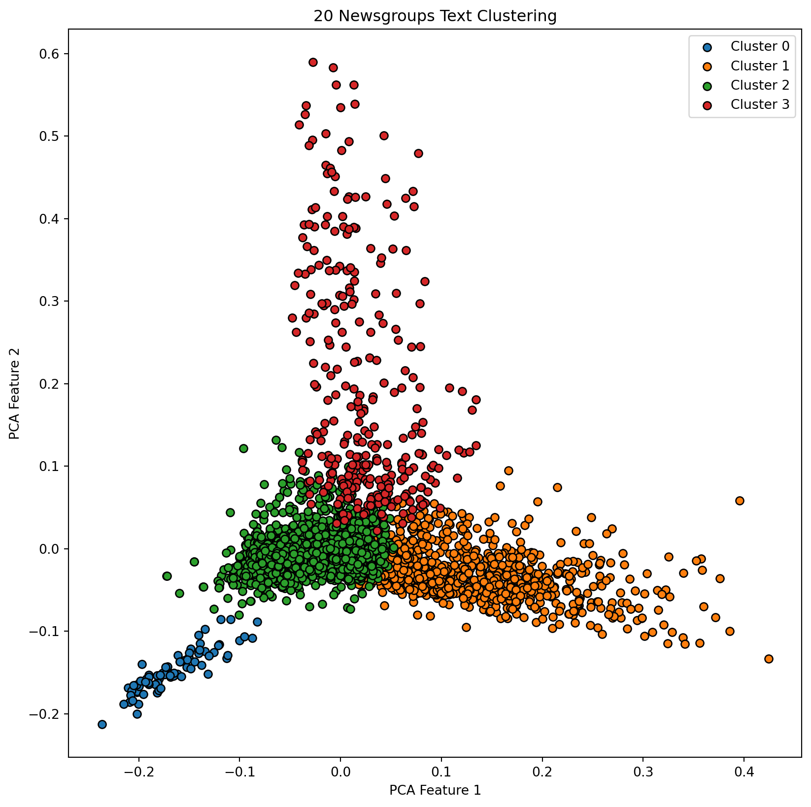
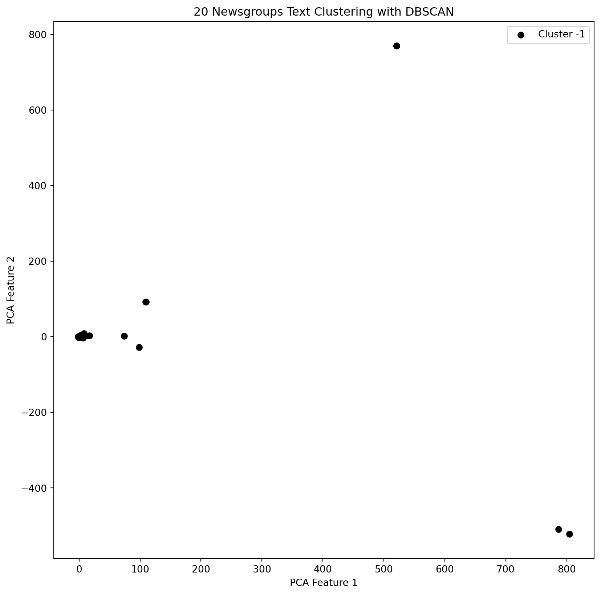

import numpy as np
import matplotlib.pyplot as plt
from sklearn.datasets import fetch_20newsgroups
from sklearn.feature_extraction.text import TfidfVectorizer
from sklearn.cluster import KMeans
from sklearn.decomposition import PCA
from sklearn.cluster import DBSCAN
from sklearn.preprocessing import StandardScalerLet’s talk about Clustering in this blog.
Clustering in machine learning is like organizing a big, mixed-up collection of things into groups based on similarities. Imagine we have a bunch of different fruits mixed together and we want to sort them out. Clustering is like grouping apples with apples, bananas with bananas, and so on, based on their features like color, size, or taste.
In machine learning, clustering algorithms look at data and try to find these natural groupings. The algorithm scans through the data and tries to figure out which items are similar to each other. It’s like it’s asking: “Does this data point look more like an apple or a banana?”
This is useful because sometimes we have a lot of data but we don’t know what categories exist in it. Clustering helps us find these categories automatically, making it easier to understand and use the data. For example, a website could use clustering to group together similar news articles, so it’s easier for readers to find the stories they’re interested in.
Task Demo
I utilize the 20 Newsfroups Dataset from scikit-learn cluster news articles into groups. Preprocess text data, convert it to TF-IDF vectors, and use an algorithm like K-Means or DBSCAN. Analyze the resulting clusters to see if they make sense in terms of news categories.
# Load the dataset
categories = ['alt.atheism', 'comp.graphics', 'sci.med', 'soc.religion.christian']
newsgroups = fetch_20newsgroups(subset='all', categories=categories, shuffle=True, random_state=42)
# Text preprocessing with TF-IDF
vectorizer = TfidfVectorizer(stop_words='english')
X = vectorizer.fit_transform(newsgroups.data)
# Apply K-Means clustering
num_clusters = 4 # As we have chosen 4 categories
km = KMeans(n_clusters=num_clusters, random_state=42)
km.fit(X)KMeans(n_clusters=4, random_state=42)In a Jupyter environment, please rerun this cell to show the HTML representation or trust the notebook.
On GitHub, the HTML representation is unable to render, please try loading this page with nbviewer.org.
KMeans(n_clusters=4, random_state=42)
# Visualize the results
labels = km.labels_
pca = PCA(n_components=2)
X_pca = pca.fit_transform(X.toarray())
plt.figure(figsize=(10, 10))
for i in range(num_clusters):
cluster = X_pca[labels == i]
plt.scatter(cluster[:, 0], cluster[:, 1], label=f'Cluster {i}', edgecolors='black')
plt.title("20 Newsgroups Text Clustering")
plt.xlabel("PCA Feature 1")
plt.ylabel("PCA Feature 2")
plt.legend()
plt.show()
The generated plot using PCA (Principal Component Analysis) to reduce the data to two dimensions gives a visual representation of how the documents are grouped after applying K-Means clustering.
This plot reveals that the clusters have minimal overlap, indicating effective separation and good model performance. Besides, the presence of similarities among documents in the green, orange, and red clusters is obvious from their clustering pattern. The dense clustering of green and orange spots implies that their content is quite similar. Conversely, the sparser distribution of blue clusters might suggest a greater diversity in the content of these documents.
Let’s do it another way by using DBSCAN.
# Standardize features by removing the mean and scaling to unit variance
X_std = StandardScaler(with_mean=False).fit_transform(X)
# Apply DBSCAN clustering
dbscan = DBSCAN(eps=0.5, min_samples=5)
clusters = dbscan.fit_predict(X_std)# Visualize the results
pca = PCA(n_components=2)
X_pca = pca.fit_transform(X_std.toarray())
plt.figure(figsize=(10, 10))
unique_clusters = set(clusters)
for cluster in unique_clusters:
if cluster == -1: # Noise points
color = 'black'
else:
color = plt.cm.nipy_spectral(float(cluster) / len(unique_clusters))
cluster_points = X_pca[clusters == cluster]
plt.scatter(cluster_points[:, 0], cluster_points[:, 1], c=[color], edgecolors='black', label=f'Cluster {cluster}')
plt.title("20 Newsgroups Text Clustering with DBSCAN")
plt.xlabel("PCA Feature 1")
plt.ylabel("PCA Feature 2")
plt.legend()
plt.show()
The plot doesn’t display effectively, suggesting that k-means clustering might be a more suitable approach for the 20 News groups dataset.